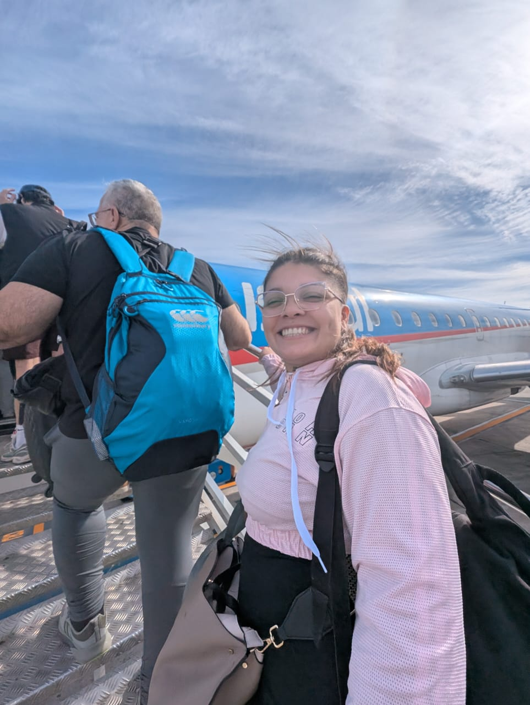
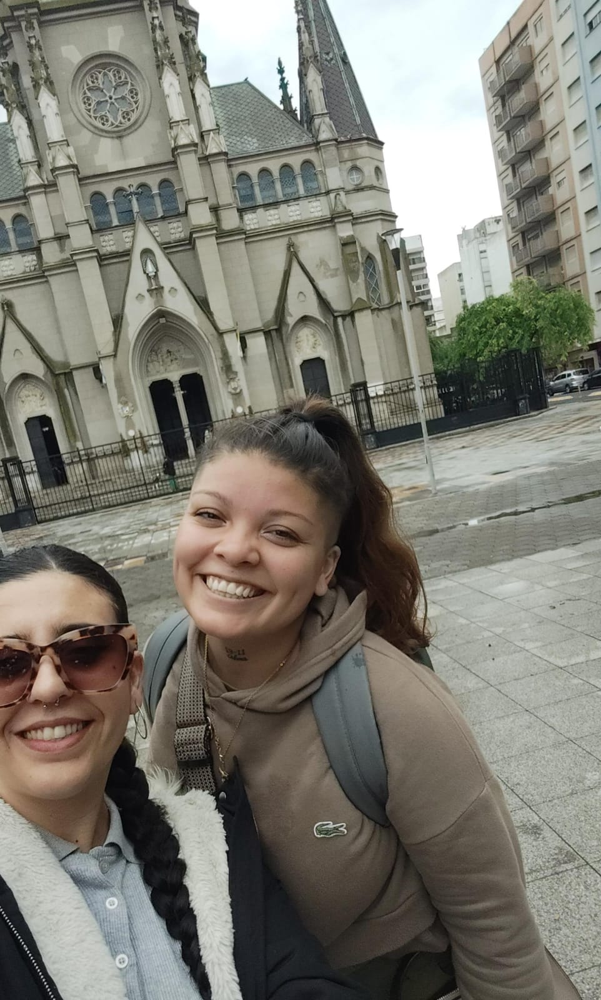
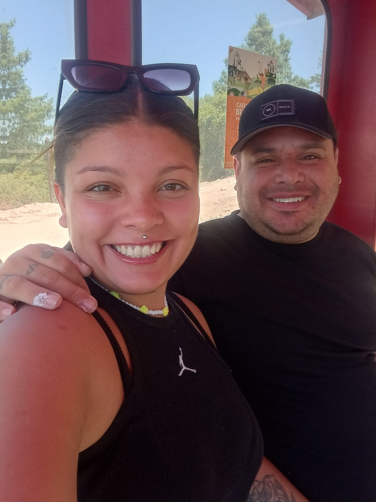

Hoy camino un proceso de transformación personal. La recuperación no es solo dejar de consumir: es aprender a vivir de una manera completamente nueva.

Hoy estoy limpia. Elijo la recuperación todos los días, incluso cuando cuesta. Estoy estudiando, esforzándome y aprendiendo a ser mejor persona, reconstruyéndome desde adentro hacia afuera.
Nada fue fácil, pero cada paso que doy es una victoria que antes parecía imposible.
Aprendí a mirarme con más amor, a respetar mis procesos y a entender que sanar no es lineal, pero sí real.
Hoy mi vida tiene rutina, compromiso, fe y propósito. Ya no sobrevivo: estoy viviendo.


En este camino no estoy sola.
Me acompaña mi mejor amiga Merlina Romeo, que vive en España pero está presente en cada palabra de aliento, en cada caída y en cada logro.
La distancia nunca rompió el lazo; al contrario, lo hizo más fuerte. Su amor, su escucha y su apoyo son parte fundamental de mi sostén emocional.
También camina a mi lado mi pareja Federico Fernández Daguerre.
Hoy puedo decir con humildad y gratitud que llevo varios meses limpia, aprendiendo a vivir un día a la vez y descubriendo una versión de mí que antes parecía imposible.
En gran parte, ese comienzo también fue gracias a tu confianza y a tu decisión de creer en mí.
Hoy empezamos a construir un futuro juntos, con esperanza, aprendizaje y la fe de que Dios sigue guiando nuestros pasos.
Actualmente continúo mi proceso de recuperación realizando mi tratamiento en El Castillo, de la ONG Proyecto Vida Digna.
Es un espacio donde sigo trabajando día a día en mi crecimiento personal y espiritual.
Mi recuperación también está guiada por el programa de los 12 pasos de Narcóticos Anónimos, que me enseñan a vivir un día a la vez y a reconstruir mi vida con honestidad.
En este camino cuento con el acompañamiento de mi madrina Sandra, Carla y de los operadores Héctor, Luis, Nicolás y Germán, quienes con compromiso y apoyo forman parte fundamental de este proceso de cambio.
Hoy estoy construyendo una vida nueva. Una vida con propósito, fe y esperanza.